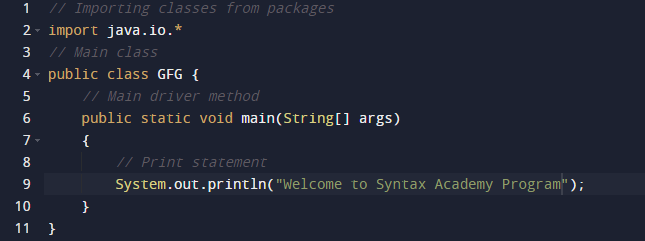

JAVA was developed by James Gosling at Sun Microsystems Inc in the year 1995, later acquired by Oracle Corporation. It is a simple programming language. Java makes writing, compiling, and debugging programming easy. It helps to create reusable code and modular programs.
Java is a class-based, object-oriented programming language and is designed to have as few implementation dependencies as possible. A general-purpose programming language made for developers to write once run anywhere that is compiled Java code can run on all platforms that support Java.
History: Java’s history is very interesting. It is a programming language created in 1991. James Gosling, Mike Sheridan, and Patrick Naughton, a team of Sun engineers known as the Green team initiated the Java language in 1991. Sun Microsystems released its first public implementation in 1996 as Java 1.0.
It provides no-cost -run-times on popular platforms. Java1.0 compiler was re-written in Java by Arthur Van Hoff to strictly comply with its specifications. With the arrival of Java 2, new versions had multiple configurations built for different types of platforms.
Java Programming is name JAVA. Why?
After the name OAK, the team decided to give a new name to it and the suggested words were Silk, Jolt, revolutionary, DNA, dynamic, etc. These all names were easy to spell and fun to say, but they all wanted the name to reflect the essence of technology. In accordance with James Gosling, Java the among the top names along with Silk, and since java was a unique name so most of them preferred it.
Example of Java Programming Code

Output:
Welcome to Syntax Academy Program
Explanation
Comments
1. Comments are used for explaining code and are used in a similar manner in Java or C or C++. Compilers ignore the comment entries and do not execute them. Comments can be of a single line or multiple lines.
Single line Comments:
Syntax:
// Single line comment
Multi-line comments:
Syntax:
/* Multi line comments*/
2. import java.io.*: This means all the classes of io package can be imported. Java io package provides a set of input and output streams for reading and writing data to files or other input or output sources.
3. class: The class contains the data and methods to be used in the program. Methods define the behavior of the class. Class GFG has only one method Main in JAVA.
4. static void Main(): static keyword tells us that this method is accessible without instantiating the class.
5. void: keywords tell that this method will not return anything. The main() method is the entry point of our application.
6. System.in: This is the standard input stream that is used to read characters from the keyboard or any other standard input device.
7. System.out: This is the standard output stream that is used to produce the result of a program on an output device like the computer screen.
8. println(): This method in Java is also used to display text on the console. It prints the text on the console and the cursor moves to the start of the next line at the console. The next printing takes place from the next line.
9. String []args: This is the argument passed to the main function which is an array of strings with the array name args. One can choose their own flexible name but this name is used by many developers.
Everything in java , is represented in Class as an object including the main function.